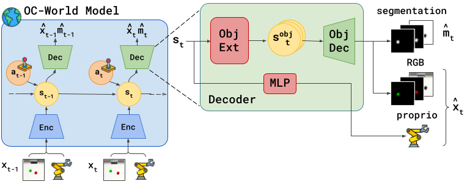

FOCUS: Object-Centric World Models for Robotics Manipulation

Abstract
Understanding the world in terms of objects and the possible interactions with them is an important cognitive ability. However, current world models adopted in RL typically lack this structure and represent the world state in a global latent vector. To address this, we propose \OurMethod{}, a model-based agent that learns an object-centric world model. This novel representation also enables the design of an object-centric exploration mechanism, which encourages the agent to interact with objects and discover useful interactions. We benchmark \OurMethod{} in several robotic manipulation settings, where we found that our method can be used to improve manipulation skills. The object-centric world model leads to more accurate predictions of the objects in the scene and it enables more efficient learning. The object-centric exploration strategy fosters interactions with the objects in the environment, such as reaching, moving, and rotating them, and it allows fast adaptation of the agent to sparse reward reinforcement learning tasks.
Exploration Behaviour


World Model Reconstructions